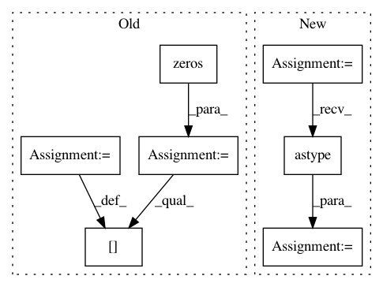

643bd0823c1f09fcb621207f3345879abf694ab0,demo.py,,main,#,85
Before Change
cv2.imwrite("prediction.png", prediction)
print("prediction done!")
red_mask = np.zeros((img_shape+(3,)))
red_mask[:, :] = (0, 0, 255)
// print(image.shape)
// image = (image * (1 - display_mask) + red_mask * display_mask).astype(np.uint8)
image = prediction
After Change
dismap = np.expand_dims(dismap, axis=-1)
image = image[:, :, ::-1] // change to rgb
merge_input = np.concatenate((image, dismap), axis=2).astype(np.float32)
inputs = torch.from_numpy(merge_input.transpose((2, 0, 1))[np.newaxis, ...])
// Run a forward pass
inputs = inputs.to(device)
outputs = net.forward(inputs)
outputs = upsample(outputs, size=(450, 450), mode="bilinear", align_corners=True)
outputs = outputs.to(torch.device("cpu"))
prediction = np.transpose(outputs.data.numpy()[0, ...], (1, 2, 0))
prediction = 1 / (1 + np.exp(-prediction))
prediction = np.squeeze(prediction)
prediction[prediction>0.8] = 255
prediction[prediction<=0.8] = 0
print("prediction done!")
prediction = np.expand_dims(prediction, axis=-1).astype(np.uint8)
image = image[:, :, ::-1] // change to bgr
display_mask = np.concatenate([prediction, prediction, prediction], axis=-1)
image = cv2.addWeighted(image, 0.9, display_mask, 0.5, 0.1)
if k == 99:
break
In pattern: SUPERPATTERN
Frequency: 4
Non-data size: 7
Instances
Project Name: jfzhang95/DeepGrabCut-PyTorch
Commit Name: 643bd0823c1f09fcb621207f3345879abf694ab0
Time: 2018-05-28
Author: jessezhjf@gmail.com
File Name: demo.py
Class Name:
Method Name: main
Project Name: scikit-image/scikit-image
Commit Name: 1cc277630f2381f2ba0f01dcf833801a830f5c3b
Time: 2020-08-04
Author: rfezzani@gmail.com
File Name: skimage/metrics/_contingency_table.py
Class Name:
Method Name: contingency_table
Project Name: facebookresearch/deepcluster
Commit Name: 483391c3cbaf1b484cccdb30433de32ce052dc77
Time: 2019-09-05
Author: mathilde@fb.com
File Name: util.py
Class Name: UnifLabelSampler
Method Name: generate_indexes_epoch
Project Name: luispedro/mahotas
Commit Name: 93663c2cc8c0c8bc3c6f28c27679707305948c80
Time: 2010-05-11
Author: lpc@cmu.edu
File Name: tests/test_texture.py
Class Name:
Method Name: test_cooccurence